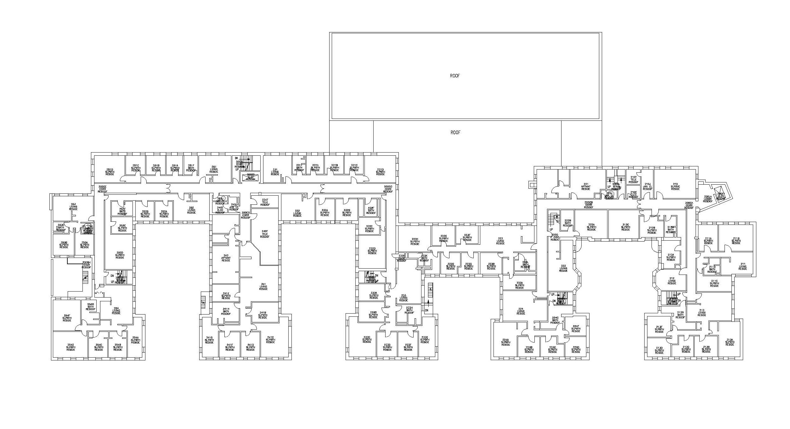

About Our Floor
Welcome to Burton 2!
We are 1 of 9 floors in the MIT dorm known as Burton Conner (BC). Our floor is a tight-knit, inclusive community with a huge range of interests.
B2 is racially/ethnically diverse and LGBTQ-friendly. We specifically accommodate kosher dietary restrictions; you can find out more about our floor plan and additional accommodations here (LINK “here” TO FLOOR PLAN ABOUT).
Considering moving to B2? Well, if you like the sound of...
- Upperclassmen who will love you unconditionally and listen to all your life problems
- All-nighters full of despair in the suite kitchen during the week
- Suite bondings full of lit-ness in the suite kitchen during the weekend
- Free (kosher and non-kosher) food at study break every Wednesday at 10 PM
- Screaming at the screen during weekly reality TV/KDrama episodes
- Cuddle puddles on the giant brown bean bag
- Throwing “surprise” birthday celebrations at 11:59 PM
- Some really bad karaoke
- Some heckin’ good jam sessions
- Your suitemates being the most obnoxious fans at your dance/music performance
- Stress-baking brownies instead of studying for your exam
- Getting destroyed by your friends in Smash instead of doing your pset
- Photos of you sleeping in public immortalized for eternity in the B2 Dropbox
- Breathing new life and noise into a floor of jaded MIT students
...this might just be the floor for you.
If you join us, you’ll get eXcLuSiVe aCcEsS to the following floor traditions:
- B2 Retreat: 2 nights with your new friends in a cozy New England Airbnb
- Fridge quotes: anything you say can and will be used against you out of context
- Pineapples mailing list: guess the leaves on the pineapple (human algorithms only)
- Apple Bake: the dorm-wide apple cuisine competition
- B2 Thanklsgiving: a heartwarming potluck Thanksgiving dinner, typo intended
- Assassins: the annual game of last-man-standing (there are no friends in Assassins)
- Super Bowl party: lots of pizza, wings, and judging of corporate ads
And although our mascot was once the B2Knight, it is now the B2can. Squawk!
(FLOOR PLAN ABOUT)
Burton 2 is made of 8 suites, connected by hallways. Each suite contains a fully-furnished kitchen, a shared bathroom, and a unique mixture of singles/doubles/triples. All our residents share a floor lounge equipped with entertainment technology! You can find the official floor plan below.
Most suites and bathrooms on B2 are gender-neutral, unless otherwise requested. Every year, 2 of the 8 suites are reserved for residents with kosher dietary restrictions. (kosher dietary restrictions). These 2 suites are typically single-gender.

You are not required to purchase a meal plan if you live in BC. Some residents will still choose to purchase one; they typically find that they do not use all of their meal swipes.
All shared spaces are regularly cleaned by our wonderful housekeeping staff. BC has elevators and will be wheelchair-accessible after completion of the renovation slated for 2020-2022.
Feel free to contact our floor chairs at burton2-chairs@mit.edu